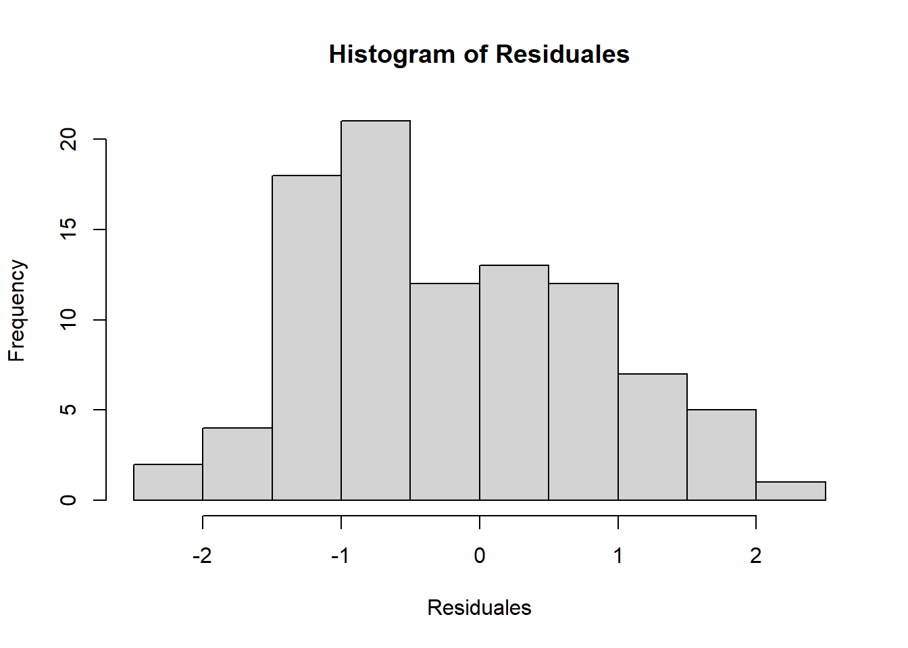
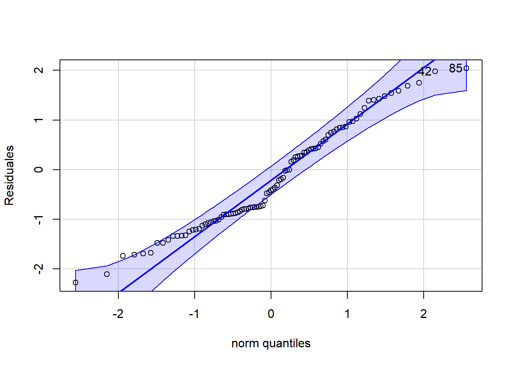
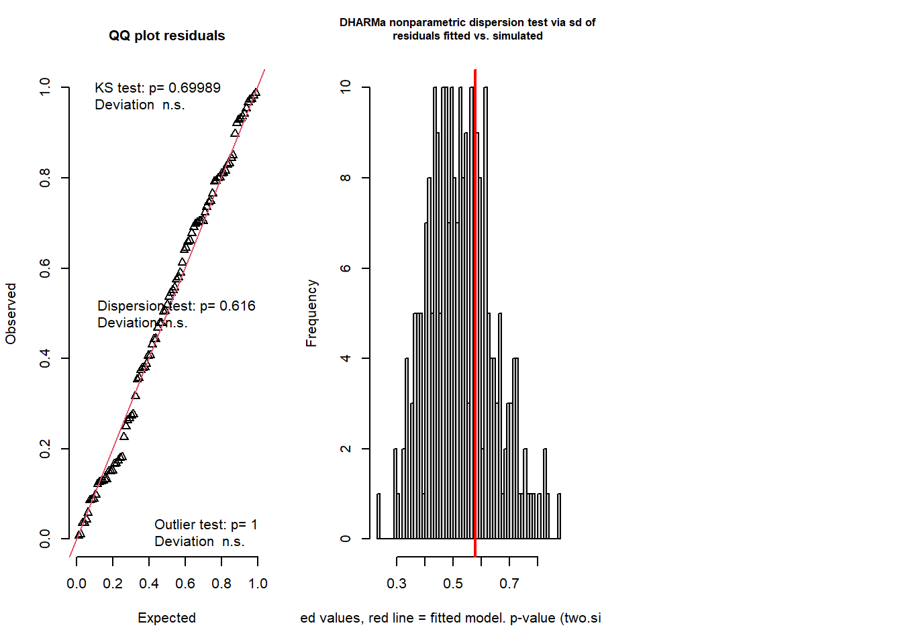
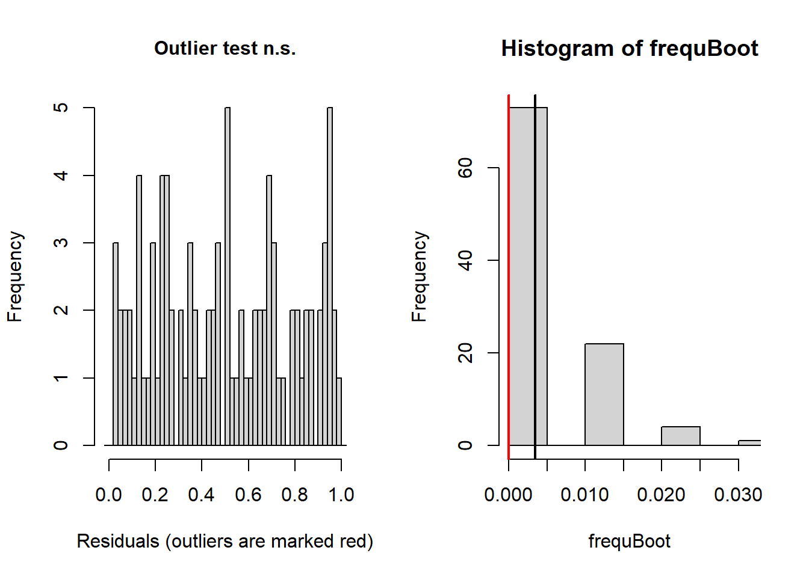
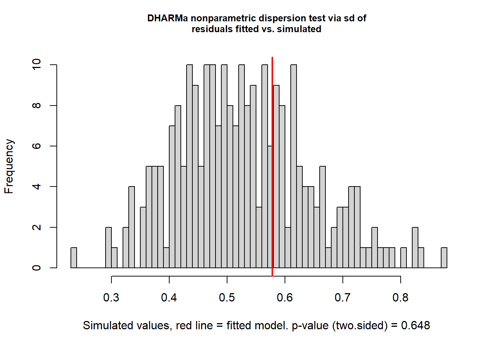
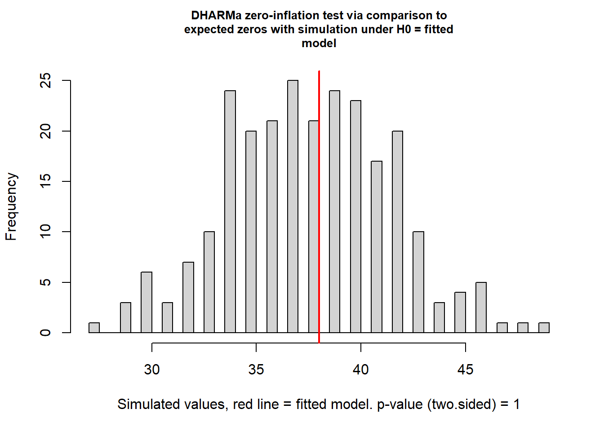
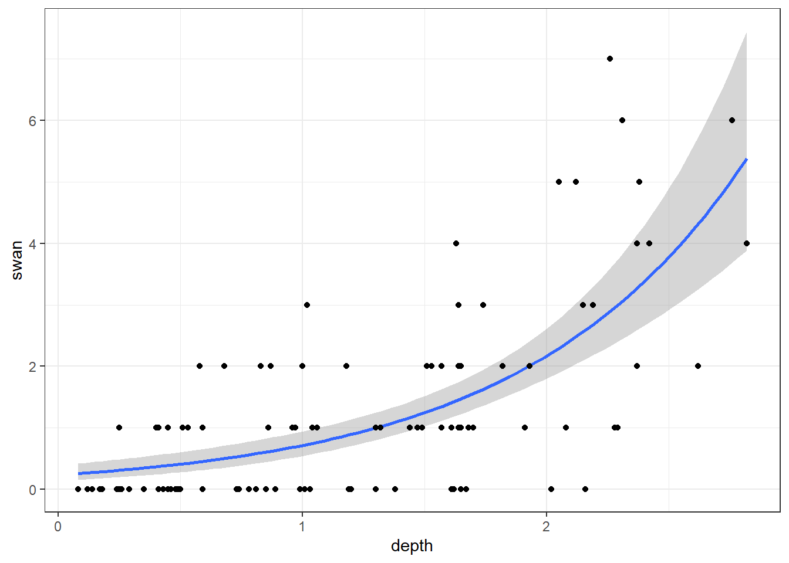

muss <- read.table("https://www.dropbox.com/s/q8tpwcfsh232g4s/muss.txt?dl=1",
header = T, dec = ".", stringsAsFactors = T)Clase 6: Modelos lineales Generalizados
Los modelos lineales generalizados (GLM) son una clase de modelos estadísticos que se utilizan para describir la relación entre una variable dependiente y una o más variables independientes. A diferencia de los modelos lineales tradicionales, los modelos lineales generalizados no asumen que la relación entre las variables es lineal y permiten la utilización de una distribución de error no normal para la variable dependiente.
Los modelos lineales generalizados se basan en el concepto de un modelo de respuesta generalizado, que es una función matemática que describe la relación entre la variable dependiente y las variables independientes. El modelo de respuesta generalizado incluye una función de enlace, que describe cómo la media de la variable dependiente varía con la variación de las variables independientes, y una función de varianza, que describe cómo la varianza de la variable dependiente varía con la media.
La distribución de Poisson es una distribución de probabilidad discreta que se utiliza para modelar el número de eventos que ocurren en un intervalo de tiempo o un espacio dado. La distribución de Poisson se caracteriza por un solo parámetro, llamado tasa de eventos o tasa de Poisson, que describe la frecuencia esperada de eventos en el intervalo de tiempo o espacio dado.
Para la clase utilizaremos una base de datos sobre mejillones, a nuestra tabla la llamaremos muss y podemos cargarla con el sigueinte comando
La base de datos muss esta compuesta por 5 variables y 95 observaciones, cada fila en la base de datos representa un metro cuadrado, y dentro de las variables tenemos:
- depth: water depth
- subs: substrato, es un factor con tres niveles (gravel, mud, sand)
- unio: abundancia de pintores y mejillones hinchados
- duck: abndancia de New Zealand duck mussel o Anadara novaezelandiae
- swan: abundancia de The swan mussel, o Anadara australis
str(muss)'data.frame': 95 obs. of 5 variables:
$ depth: num 0.08 0.12 0.14 0.17 0.18 0.24 0.25 0.25 0.26 0.29 ...
$ subs : Factor w/ 3 levels "gravel","mud",..: 2 2 2 2 2 2 2 2 3 2 ...
$ unio : int 0 0 0 0 0 0 0 0 0 12 ...
$ duck : int 0 0 0 0 0 1 0 0 0 2 ...
$ swan : int 0 0 0 0 0 0 0 1 0 0 ...En R podemos crear un GLM con distribucion de poisson utilizando el comando glm() y especificando la familia (family) y enlace (link).
Antes de realizar nuestros modelos, revisaremos nuestras variables respuestas
table(muss$unio)
0 1 2 3 4 5 8 9 11 12
59 11 7 6 5 2 2 1 1 1 table(muss$duck)
0 1 2 3 4 6 7 8
42 28 15 1 5 1 2 1 table(muss$swan)
0 1 2 3 4 5 6 7
38 27 15 5 4 3 2 1 Tenemos tres variables respuestas, union, duck y swan, de las cuales swan es la que seleccionaremos para realizar nuestros modelos.
Antes de crear nuestros modelos convertiremos la variable subs a factor, estos nos permitire realizar una prueba de contraste.
muss$subs <- factor(muss$subs)mussFit1 <- glm(swan ~ subs, family = poisson(link = log), data = muss)
mussFit2 <- glm(swan ~ depth, family = poisson(link = log), data = muss)
mussFit3 <- glm(swan ~ depth + subs, family = poisson(link = log), data = muss)
mussFit4 <- glm(swan ~ depth:subs, family = poisson(link = log), data = muss)
mussFit5 <- glm(swan ~ depth*subs, family = poisson(link = log), data = muss)
mussFit6 <- glm(swan ~ depth + depth + I(depth^2), family = poisson(link = log), data = muss)
mussFit7 <- glm(swan ~ subs + I(depth^2), family = poisson(link = log), data = muss)Para esto necesitarems cargar el paquete AICcmodavg
library(AICcmodavg)Creamos la variable Candidatos la cual contiene nuestros modelos candidatos y la variable Modelos que contendra los nombres de nuestros modelos
Candidatos <- list(mussFit1, mussFit2, mussFit3,
mussFit4, mussFit5, mussFit6, mussFit7)
Modelos <- c("mussFit1", "mussFit2", "mussFit3",
"mussFit4", "mussFit5", "mussFit6", "mussFit7")El comando aictab() nos permitira observar nuestros modelos y los criterios de selecion
aictab(Candidatos, Modelos, sort = TRUE)
Model selection based on AICc:
K AICc Delta_AICc AICcWt Cum.Wt LL
mussFit2 2 250.23 0.00 0.49 0.49 -123.05
mussFit6 3 252.26 2.03 0.18 0.67 -123.00
mussFit3 4 252.47 2.24 0.16 0.83 -122.01
mussFit4 4 252.73 2.49 0.14 0.97 -122.14
mussFit5 6 256.70 6.47 0.02 0.99 -121.87
mussFit7 4 258.26 8.02 0.01 1.00 -124.91
mussFit1 3 305.12 54.88 0.00 1.00 -149.43Ya que el modelo mussFit2 fue es mejor rankiado, ahora realizaresmos algunas pruebas con el fin de validar nuestro modelos
Residuales <- residuals.glm(mussFit2)
hist(Residuales)
car::qqPlot(Residuales)
[1] 85 42shapiro.test(Residuales)
Shapiro-Wilk normality test
data: Residuales
W = 0.96278, p-value = 0.008446Ahora utilizaremos el paquete DHARMa
library(DHARMa)This is DHARMa 0.4.6. For overview type '?DHARMa'. For recent changes, type news(package = 'DHARMa')testResiduals(mussFit2)

$uniformity
Exact one-sample Kolmogorov-Smirnov test
data: simulationOutput$scaledResiduals
D = 0.070849, p-value = 0.6999
alternative hypothesis: two-sided
$dispersion
DHARMa nonparametric dispersion test via sd of residuals fitted vs.
simulated
data: simulationOutput
dispersion = 1.0949, p-value = 0.648
alternative hypothesis: two.sided
$outliers
DHARMa bootstrapped outlier test
data: simulationOutput
outliers at both margin(s) = 0, observations = 95, p-value = 1
alternative hypothesis: two.sided
percent confidence interval:
0.00000000 0.02105263
sample estimates:
outlier frequency (expected: 0.00347368421052632 )
0 $uniformity
Exact one-sample Kolmogorov-Smirnov test
data: simulationOutput$scaledResiduals
D = 0.070849, p-value = 0.6999
alternative hypothesis: two-sided
$dispersion
DHARMa nonparametric dispersion test via sd of residuals fitted vs.
simulated
data: simulationOutput
dispersion = 1.0949, p-value = 0.648
alternative hypothesis: two.sided
$outliers
DHARMa bootstrapped outlier test
data: simulationOutput
outliers at both margin(s) = 0, observations = 95, p-value = 1
alternative hypothesis: two.sided
percent confidence interval:
0.00000000 0.02105263
sample estimates:
outlier frequency (expected: 0.00347368421052632 )
0 Sobredispersión se refiere a una situación en la que la varianza de los datos es mayor de lo que se esperaría en un modelo lineal general (GLM). Esto puede indicar que el modelo no es adecuado para los datos o que hay algún tipo de variabilidad no capturada en los datos.
Una manera de evaluar si hay sobre dispersión es comparar la varianza de los datos con la varianza predicha por el modelo. Si la varianza de los datos es significativamente mayor que la varianza predicha por el modelo, es posible que haya sobre dispersión.
Evaluado la sobredispersion a mano
summary(mussFit2)$deviance / summary(mussFit2)$df.residual[1] 1.110871Si el valor resultante es 1, no tenemos sobredispersion, pero si el valor resultante es diferente a 1 podemos presentar problemas de sobredispersion.
Ahora utilizando el paquete DHARMa
testOverdispersion(mussFit2)testOverdispersion is deprecated, switch your code to using the testDispersion function
DHARMa nonparametric dispersion test via sd of residuals fitted vs.
simulated
data: simulationOutput
dispersion = 1.0949, p-value = 0.648
alternative hypothesis: two.sideddev_mussFit2 <- summary(mussFit2)$deviance
df_mussfit2 <- summary(mussFit2)$df.residual
1- pchisq(dev_mussFit2, df_mussfit2)[1] 0.2182104Si el valor resultante es mayor que 0.05 indica un buen ajuste del modelo.
testZeroInflation(mussFit2)
DHARMa zero-inflation test via comparison to expected zeros with
simulation under H0 = fitted model
data: simulationOutput
ratioObsSim = 1.0058, p-value = 1
alternative hypothesis: two.sidedlibrary(ggplot2)
ggplot(data= muss, aes(x= depth, y= swan)) +
stat_smooth(method = "glm", method.args = list(family = "poisson"))+
geom_point()+
theme_bw()`geom_smooth()` using formula = 'y ~ x'